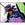

|

Michael The-Zorch Haney
Author of 16 Stories |
UPON ETHEREAL WINGS
By Michael "TheZorch" Haney
**********
NOTES:
Concepts used in this fic were developed back in 1992 when for the original story behind Orrin Quintarin, a character I later used in the Tenchi fan fic "The Dark Lord of Jurai". That original story was never completed but will be someday. Other concepts in this fic were inspired by the 119 chapter Ranma fan fic by Jim Bader entitled "A Tale of Two Wallets". Special thanks to Doug Dennis, author at Fan-Fics-R-Us, and Dataxan for their input and proofreading assistance.
Prologue
Herb of the Musk was defeated, and Ranma had restored his ability to return to his male form with the magical Open Water Kettle. When he got back home to the Tendo's place he was greeted with the shock of his life.
And Ranma was still in shock. Akane hugged him, actually hugged him! No yelling, no hitting, she ran to him threw her arms around his waist and hugged him! And she cried too. That part really bugged Ranma a lot, he didn't like seeing Akane cry. Despite all the abuse he got from her he still cared about the girl who was his iinazuke, even though the whole engagement thing was cooked up by his father and Mr. Tendo. That would have been enough, but for some reason Akane's attitude towards him has suddenly changed. She's almost gone out of her way not to be mad at him and is even trying to listen to his side of the story for once. He wasn't sure what was going on with her, yet somehow he liked it.
Those days waiting for Ranma to return after he went after Herb and the Open Water Kettle had been a nightmare for Tendo Akane. She laid in her bed staring up at the ceiling. No I don't miss him., she told herself. Good riddance to him!, she said again after a little while. Where is he?, she wondered later. Ranma, please be alright., her heart pleaded just before falling asleep, tear streaks still evident on her face.
When Ranma came back it was like a dream. First he wasn't there and then he was. She tried to act indifferent to his return, but the days he'd been gone were like a kind of torture. For the very first time Akane was afraid for Ranma, afraid he wouldn't be back from this battle, afraid that she'd loose him for good. That fear tore away some of the black veil that covered her true feelings concerning the sex switching youth. Herb was an enemy unlike any Akane had seen Ranma face before. He was very powerful, almost too powerful. It would have taken a miracle for Ranma to defeat him. Now he was back, he did win against him, and Ranma had his manhood back but also still had the cursed. That didn't matter so much to Akane, she'd been living under the same roof with Ranma so long that it just didn't bother her anymore. It was the sheer fact that he could have been killed leaving her alone that terrified her. So when Ranma came back she did the only thing she could, she ran to him, threw her arms around him and cried into this chest.
It all became clear to Akane. She couldn't change who or what Ranma was, he was a Saotome, he was a martial artist, and he will have challenges and battles. It wasn't what was wrong with Ranma it was what was wrong with Akane. She was the problem, her out of control temper was the problem. Looking back Akane realized that her life was way better off since Ranma came to live in her father's house. He kept the Hentai Horde at bay, he pacified Kuno, and saved her life more times than she could count. She was "lucky" to have a man like him, she took him for granted, abused him, accused him of things he didn't do. It all hit her like the proverbial "ton of bricks". Akane needed to change her life, change her attitude towards Ranma, or one day she'll loose him never having really known him. She really didn't know Ranma, or she thought she did, but even those perceptions were clouded by her anger. Anger at discovering the girl she was beaten by almost a year ago in the dojo was actually a boy who turns into a girl because of a curse. I was so stupid!, she berated herself.
From that day Akane endeavored to improve herself, to keep her temper in check, and to stop hiding her feelings for someone who was literally the man of her dreams. The two returned from a grueling day at Furinken High School, it took all of Akane's willpower but she didn't hit Ranma not even once all day. Not even when he accepted Okonomiyaki from Ukyo, or when Shampoo showed up with her Bicycle of Death and glomped him. Seeing through new eyes Akane realized Ranma really didn't want Shampoo's attention, he wasn't inviting her to glomp him, she was the one doing the glomping! Ranma considered Ukyo a friend and treated her that way, he didn't treat her like a man treated a woman he liked romantically. It was with this new perception that Akane also realized that Ranma was afraid of her. She decided to do something about that immediately!
"We're home!" Akane announced as she and Ranma enter the Tendo house.
The ever cheerful Tendo Kasumi peeked her head out of the kitchen and said, "Oh Akane, Ranma, dinner will be ready in about an hour."
"Ok, we'll be in the dojo." Replied Akane.
"Uh, we will?" Ranma eyed her suspiciously.
She grabbed his hand, an act that shocked him as much as the hug the other day, and led him through the house. "Yes, we're going to the dojo, we need to talk."
"We do?"
They sat facing one another on the dojo floor. Ranma was very uncomfortable. Akane had been quiet towards him all day today even then Shampoo showed up. Now that they were alone in the dojo he was afraid that she was going to blow up on him. The first thing she said he wasn't expecting at all.
"Ranma, are you as tired of this whole situation as I am?"
"Nani?" he gaped at her.
"Are you?" she asked again.
He scratched the back of his head and stammered, "Well, uh."
"Let me rephrase it then." She replied calmly. "Are you happy with how our relationship is going?"
She wants to break it off., he realized to himself. "Well, sorta."
"I can see it in your face, you're not." She said.
"No, I'm not." He admitted resigning himself to the inevitable. The inevitable that never came.
"So am I, Ranma, I want us to start over." Ranma looked up at her in surprise and saw the serious expression on her face.
"I was, afraid, the whole time you were gone chasing down Herb." Akane confessed. "Afraid that I'd loose you and I never really took the time to know you."
"Akane, I-"
"Let me finish." She interrupted him raising one hand. "These past few days made me think, about you and me. We both didn't get off on a good start and our fathers pushing this whole thing on us all the time isn't helping either. This whole thing with Herb made me realize what's really important to me."
"You're important to me." She finished looking down at her hands.
"Akane." Ranma gasped quietly.
"Never thought you'd hear me say that, did you?" she asked looking up at his cute, bewildered face.
Ranma was over next to her in a shot and pressed her hand to her forehead. "Akane are you ok, you don't have a fever-"
She grabbed his hands and looked into his eyes. "There's nothing wrong with me, well not what you think is wrong, but what I said is the truth." She told him.
He looked back at her, his expression softened, the barriers between began to slowly crack and crumble away. "You're important to me too." He admitted.
Tears threatened to come forth in Akane's eyes. "I've been so wrong, you're the best thing that's ever happened to me and I've treated you like trash." That past part came out in a near sob from her lips.
"I ain't been any better, Akane." He smiled. "You know me, I think before I say anything, I kinda-"
"Stick your foot in your mouth?" she finished for him with a crooked smile.
He laughed. "Ah, yeah."
"I say things I shouldn't really say, you know kinda like thinking out loud and stuff." He went on. "Like when I talk about your cooking-"
"My cooking stinks, I have to admit it to myself." She interrupted him. "Not even P-Chan would eat it and pigs eat anything."
"You can get better." Ranma reassured her. "Its like martial arts, you only get better with practice."
Akane laughed. "Everything with you is martial arts, but then I guess I'm stuck with that."
Ranma smiled at that. "Keep trying, never give up, that's what I live by and it's made me the best."
"You are so arrogant." Akane smirked.
"And you're such a tomboy." Ranma smirked right back.
"Am I really that uncute?" she asked seriously.
Their eyes met again. "No, actually your kinda cute right now."
"Ranma, we gotta make some promises to one another, starting with me." She said and went on. "I promise not to hit you anymore, to always listen to your side of the story, to stop coming to conclusions, and to be nicer to you."
"I promise not to call you uncute, or sexless, or built like a brick, and stuff like that." Ranma said, earning a slight smirk from his iinazuke. "I promise to stop criticizing ya and to like help ya get better in stuff, like cooking and in the art too."
Akane blinked. "The art, you mean you'll train with me?"
"Why not, if you're gonna hang with me you'll need it." He laughed.
"I should've seen that one coming." She rolled her eyes.
"I like this, I'm sorry it took scaring the begeebees out of you, but I like this." He smiled, his fingers softly caressed Akane's hands.
Akane was suddenly very serious. "I don't know if I'm truly in love with you Ranma, but I know I'd be lost if you never came back."
Ranma tightened his grip on her hands only slightly. "Why don't we see if we can like fall in love?"
"I'd like that." She said softly.
"Me too." Slowly as if guided by instinct the two leaned towards one another. The kiss was clumsy but it was a start. A feeling like electricity ran through the two of them and between them. Their arms moved of their own accord and wrapped around one another as they deepened the kiss and pressed their bodies together. Ranma and Akane's hearts raced and all the world around seemed to blur and fade into nothingness. When they parted both issued a soft but startled, "Wow."
"Its in the bag, Saotome." Tendo Soun whispered from his hidden vantage point near one of the partially opened doors of the dojo.
"They keep this up the schools will be join in no time." Saotome Genma, in human form, a rarity, smiled at his lifelong friend.
"I think this whole incident has made Akane finally wake up." Nabiki whispered.
"Oh my, you really think so Nabiki?" Kasumi asked quietly.
Nabiki nodded. "I know my little sister, she was all torn up when Ranma was gone."
"Hopefully this will reduce the cost of repairs." She added with a sigh.
Across town sat a modest Chinese restaurant. The sign outside read "Nekohautan" in scrawled Japanese kanji characters, which translates to "Cat Café". The proprietor stood at her customary place in the kitchen preparing ramen. She checked the water to make sure it was boiling and slowly dropped the wire basket of uncooked ramen inside. Perched midway up on a knurled old wooden staff with nearly perfect superhuman balance, Matriarch Cologne of the Nyanchiczu, the Chinese Amazons, turned to the two bowls of steaming ramen she just prepared and added the ingredients. Holding them up in both hands and gripping the staff with her feet she turned and yelled out.
"Two ramen for table four!"
She tossed the two bowls through the air. A light purple blur shot past snatching the two bowls out of the air. Shampoo, great grand daughter to Cologne, and future successor to her legacy as Matriarch of the Nyanchiczu delivered the order to the appropriate table then gleefully went on to her next task. Cologne noticed Mousse, a male of the Nyanchiczu, a skilled warrior in the difficult to master art of hidden weapons which contrasted well with his poor vision, bussing the empty tables left behind by the late lunch crowd. She saw him from time to time shoot affectionate glances over at Shampoo and sighed. The boy will never learn that Shampoo doesn't share his feelings., she said to herself.
Cologne became aware of a change in the air, it was to her unique senses very powerful. A sudden wave of disorientation washed over the old matriarch. For the first time she nearly feel from her staff. Shampoo saw her great grand mother's distress and rushed to her aid. Mousse just smirked. Old bat, I hope it's a stroke., he cheered inwardly. Just as it began the disorientation ended and Cologne caught herself before Shampoo could reach her.
"Great grand mother, what's wrong!" Shampoo was so concerned she forgot to speak in Nihongo and spoke in Mandrin instead.
Cologne waved her off. "I'm fine, I suddenly felt a disturbance in the flow of destiny surrounding Nerima."
"Curious, very curious." She added.
"What it mean, great grandma?" Shampoo asked switching to Nihongo, a language she still hadn't fully mastered yet.
"The change appears to be centered around son-in-law, yet I also feel it around the Tendo girl also." The matriarch mused.
"Kitchen Destroyer?" Shampoo blinked.
"Remain here and tend to the customers." Cologne ordered. "Whether it is for good or ill I just discover the nature of this shift in the strings of destiny surrounding the Tendo home." With that Cologne bounded from the kitchen using her staff like a pogo stick and vanished through the front door at an incredible speed for someone of her apparent age.
"Great grandma is worried, Ranma come back from fight with Musk but-" Shampoo thought out loud.
"Oh, airen, please be ok." She sighed.
Damn you Saotome, I'll get you for stealing the affections of my Shampoo., Mousse seethed inwardly as he tossed an empty bowl onto his cart and headed for the kitchen.
Almost over a thousand miles away an elderly woman sat in lotus position in the center of a grass hut. She sat quietly not moving with barely even a perception of her breathing. Despite her age, which was considerable, she appeared to be no more than forty to forty five years of age. Her gray hair flowed luxuriously down her back and along the floor. Had she been standing it would have reached her ankles. Silken robes covered her body revealingly only traces of a once voluptuous figure. For her age she was still strikingly beautiful, but the years were slowly eroding her once widely envied good looks.
Lady Ambrosia, member of the council of elders of the Nyanchiczu, opened her eyes with a start. I've found her., she said to herself. The memory of the perceived change in the winds of destiny in the far off land of Japan where the Matriarch currently dwelled was still fresh in her mind.
"Lady Ambrosia?" The elder looked up to see her niece look down at her with a look of concern.
"I am fine Orchid dear." She said.
"You looked disturbed for a moment." Orchid wasn't very convinced.
Ambrosia reached out her arm, a wooden staff gilded with gold and silver slowly flew through the air and into her open palm. With the staff she climbed to her feet. "I've found her." She said.
Orchid gasped. "Are you certain?"
"Yes, without a doubt." Ambrosia nodded.
"Are, are we in danger?" Orchid had to ask, she was a warrior and it was her duty to know if there were threats to her people.
"That is unknown, my steps must be measured lightly for now on." The old woman replied.
She turned and walked towards the only entrance to the hut. "I must leave now."
"Wait, without informing the council?" Orchid exclaimed.
"That would be unwise, you know how they would react." The old woman turned to look at her. "The old fools still hold to the foolish and dangerous notion that The One would be found only among our people."
Orchid nodded and looked down at her hands. "They would certainly voice many objections."
"Objections, dear, they would be quite livid, and most of their aggression would undoubtedly fall upon me." Ambrosia pointed at herself after making a wide gesture with her arms.
"They would never-"
"They would if they could." The old woman winked at her niece.
"What should I say if they ask me where you have gone?" Orchid asked softly.
Ambrosia turned around and walked away from her, then looked over her shoulder. "Tell them the truth, you do not know." Before she was finished speaking Ambrosia's body seemed to blur and become unfocused in Orchid's eyes. Quickly the shape of her body began to bend and twists like clay being molded by great invisible hands. She diminished in size considerably before taking on a new form, one that was graceful yet also not entirely human. Orchid blinked, the beautiful swan that her aunt had become looked at her with intelligent eyes then turned and hurled herself into the air. The beautiful fowl flapped her wings gaining altitude with every stroke. Soon she was no longer visible on the horizon. If The One has been found then the Age of Shadows is near., Orchid realized with sudden horror. Ever since her birth the ancient legends were drilled into the hearts and minds of every warrior born among the Amazons.
Cologne reached her destination in record time, the Tendo household. The residual reverberations of the change in the flow of destiny here was still quite strong. Anyone in Nerima, of which there were many, who could sense this change would undoubtedly be drawn to this place soon. Cologne knew two such denizens of Nerima personally, one was a diminutive old monster who plagued her memories, and the other was a boy who couldn't find his way out of a straight line corridor. The matriarch followed the still fresh reverberations towards the Tendo dojo. Upon immediately inspection she found it empty, but she could feel where the change took place. Her son-in-law and Tendo Akane had been physically close, almost touching! That did not bode well at all, not one bit. This was a powerful cataclysmic events on the flow of destiny in Nerima, such a force only meant one thing...
"So, you've made your choice son-in-law." Cologne frowned. "But I will make certain that you learn the error of your ways." With that she turned and bounded out of the Tendo yard making it over the wall in one huge hop before taking to the roof tops to return to the Nekohautan.
Where the hell am I now?, the perpetually Lost Boy asked himself. One minute he was walking down a street of what looked like New York City, suddenly he was in a sweltering jungle and realized it was Borneo again, then he was here in what looked like Japan because the street signs were all in Nihongo kanji characters. A young boy about fifteen or so came riding by on his bicycle. Habiki Ryuga stretched out his arm, caught the youth, and his bike continued on without him until it crashed.
"HEY!"
"Is this Tokyo?" Ryuga demanded.
"You nearly trashed my bike you baka!" the boy protested.
"Answer me or you'll be wearing that bike." The Lost Boy warned.
The kid was taken aback by this, mostly because this guy who didn't seem that much older than he was held him off the ground with one arm and wasn't even straining. "Uh, yeah, you're in the ward of Nerima mister."
"I'm back in Nerima?" Ryuga exclaimed and dropped the kid. The young boy took no time in recovering his bike and high tailing it out of there.
"Huh?" Ryuga looked up and suddenly recognized the set of gates in front of him. "Akane's house."
Ranma sat in the sitting room sipping his afternoon tea. Nabiki sat in front of the television watching her favorite Anime program about a young high school kid who has a bunch of alien girls all going ape over him. If the story weren't so science fiction-ish Ranma could almost have sympathized with the guy. As it was Ranma was feeling really good. He and Akane just had that "talk" and that wonderful kiss. The memory of it brought back that feeling of electricity that went through him. Akane had gone off to the bathroom to wash up before dinner. She stepped out wearing a simple skirt and blouse intending to join Ranma at the table. Her eyes caught motion nearly the shoji doors and she spied a familiar, small black form.
"P-Chan, where have you been you naughty widdle piggy." Akane cooed over the cute little animal.
Ranma groaned. Of all the times he's gotta show up, why now?, he fumed in his thoughts. Just as everything between him and Akane were suddenly going so well "Mister I can't find my way out a wet paper bag with a talking GPS receiver strapped to my chest" had to show up to spoil his good mood. Ranma promised not to reveal Ryuga secret, but the Lost Boy turned around and abused that promise by sleeping with Akane. Of course, Ranma wasn't afraid of Ryuga doing anything. Even looking at a girl wearing a bra in a department store catalog was enough to send the baka into epileptic shock. He had also made a promises to Akane he intended to keep, he wanted their relationship to work. Not for their fathers but because he genuinely cared for Akane very much.
Akane sat down next to him and the little black pig growled at him. To Ranma's surprise Akane lightly wrapped the little animal on the nose. The tiny animal look almost shocked at that, Akane never hit him before for any reason.
"P-Chan, be nice, it's Ranma he won't hurt you." She said.
Oh yeah, watch me., Ranma replied silently to himself.
"So did you think about where we should go tonight?" Akane asked her iinazuke.
Ranma scratched his head in thought. "Well, I'm not sure, this is the first time I've actually wanted to go on a date with you."
Akane laughed. She failed to notice the truly shocked and horrified expression on her little P-Chan's face. "Well, think of something."
"Uh, I hear that traveling carnival is back in town." Ranma suggested.
Akane leaned over and kissed her iinazuke on the cheek. "Sounds like fun."
Ranma smiled a broad smiled, both because Akane was happy, and because the little pig's eyes had grown so wide they looked like they were about to fly out of their sockets. Put that in your pipe and smoke it, baka., Ranma thought looking at Ryuga. He and Akane were trying to make things between them work, he wasn't about to let Ryuga undercut his efforts. The little pig looked at Ranma with an expression of pure hatred, the young Saotome could only guess at what the pig headed Lost Boy was thinking.
Damn you Saotome, what have you done to Akane, she'd never be this nice to you., Ryuga's thoughts raged. It was the thoughts of Akane rejecting him that allowed Ryuga to defeat the hulking Musk warrior Lime. In a fit of immense despair he released the mother of all Shi Shi Hokadons. Of course the despair had been of own doing, imagining Akane telling him off like she did at his insistence when he was trying to learn the chi technique.
Ranma took Akane's hand in his and she smiled at him. She was feeling so much better now than she ever did since Ranma first arrived at her home. Many barriers between them have been shattered, many more still had yet to be taken down, but in time even these would not be able to stand long. She squeezed his hand affectionately and felt her face burn. She was blushing, blushing for Ranma. That was something Akane never thought she be doing in a million years, but here she was blushing like a giddy lovesick little girl. She liked it.
"We keep this up we might actually fall in love." She said softly.
"Maybe we have but we just can't admit it-YOWWWWW!" Ranma yelped as P-Chan clamped his jaws down on his arm. Akane gasped in shock and smacked the little animal on the bottom. She did it again!, Ryuga gasped but it came out of his mouth as a "Bwee!" He felt himself being whisked away through the house, then recognized the wash room where the washer and dryer were kept.
"Bad P-Chan, you'll stay here until you learn to be a good piggy!" Akane scowled down at the little animal and closed the door on him.
Ranma when I get some hot water you're going to pay for this!, Ryuga exclaimed. On the other side of the door Akane heard, "Bwee! Bweeeee! Bweeeeeee!" What's gotten into P-Chan, why's he so angry all of a sudden?, she wondered before return to the sitting room. Ranma was rubbing his arm and already determined the bite hadn't drawn any blood.
"You ok, I don't know what came over P-Chan." She apologized.
Wait until I see you in human form, baka., Ranma thought to himself. He replied, "Eh, maybe he's just jealous, I hear pets can get that way."
"Still he shouldn't be biting people like that." Akane said.
Ryuga, I promised to keep your secret but you abused that promise, I'm not going to let you take advantage of Akane anymore, but how do I tell her?, he wondered. His eyes went to Nabiki who was still sitting at the TV watching her shows. I wonder., he thought.
"Uh, when do you want to go?" he asked Akane.
"Oh, after dinner, we'll have plenty of time before it gets too late." She smiled.
"Ok." Nabiki suppressed a sudden shudder, she liked it better when those two were still fighting. All this lovie dovie stuff was grating on the nerves, besides it was also going eat into her profits. She wasn't going to be able to set bets on how long it be before her sister belted Ranma into the school swimming pool everyday anymore. Well, at least I won't have to pay for repairs to the house anymore., she sighed quietly.
A sudden crash issued from inside the house and a battle cry resounded, "SAOTOME RANMA PREPARE TO DIE!"
"Ryuga, when did he get here?" Akane wondered.
The Lost Boy appeared swinging his trademark lead lined umbrella at Ranma's head. The young martial artist ducked the blow easily and leapt over the table putting distance between himself and Akane to protect her.
"You baka, you could have hit Akane!" he yelled at the Lost Boy.
"It would have been your fault!" Ryuga yelled back and struck again.
Ranma flowed around the clumsy swipe. "How is it everything that happens to you always somehow ends up being my fault?" he asked.
"Shut up you!" Ryuga raged and pressed the attack.
The fight went out the shoji doors and into the back yard. The Lost Boy worked his umbrella like a sword but Ranma easily evaded all of his attacks. Ryuga made one quick downward strike but Ranma leapt up out of the way. Ryuga brought the weapon back up and discovered Ranma perched on it as if he were balancing on a tight rope.
"HOW ARE YOU TRY AND STEAL AKANE FROM ME!" Ryuga dropped the weapon, turned swiftly and raised his hands. Ranma saw the green energy ball of a Shi Shi Hokadon forming. The chi blast narrowly missed Ranma as he somersaulted out of its area of effect and landed on the roof of the Tendo house.
Akane ran outside, she knew she didn't stand of chance of stopping Ryuga, when he was enraged he was like a rampaging bull elephant. There was no stopping him short of killing him. So, she did the only thing she thought would snap him out of his blind rage. After running outside she dipped her cut into the koi pond, ran up to the boy and yelled his name. "RYUGA!"
True to his nature the boy turned around to look at her. He didn't even notice the cup of water in her hand as she brought it up to splash it in his face before it was too late. Akane gasped in shock when Ryuga suddenly vanished the instant the water touched him. For a brief second his clothes hung in the air before collapsing to the ground in a heap.
"You had this coming for a long time baka." Ranma whispered to himself.
"R-R-R-Ryuga?" Akane looked down at the pile of clothes in horrified astonishment. It did not take her long to understand what just happened. She'd been around Ranma and had seen Mousse and Shampoo transform enough times to know a Josenkyo cursed person when she saw one. What she wasn't expecting was what crawled out of the pile of clothes. At first she refused to believe what she was seeing. After the first mortified "Bwee!" from the little creature Akane back away shacking her head.
"No, no, NO!" she exclaimed.
"Bwee." Ryuga oinked. Akane, this is all Ranma's fault you must see that., he was trying to say.
"Why Ryuga, why?" Akane cried. "I trusted you!"
"I'm sorry you had to find out this way." Ranma apologized after jumping down off the roof.
"What, you mean you knew about this!" now Akane regarded him with anger.
Ranma raised his hands in defense and said, "I promised not to reveal his secret because it was sorta my fault he got cursed in the first place."
"It was?" Akane blinked.
"It's the Code of Boshido, never reveal other warrior's weaknesses." Ranma explained. "I was honor bound not to tell anyone. Remember when I told you about how he challenged me back when we were in middle school and how he didn't show up after four days. Well, that was before me and pop left for China, before Josenkyo."
Akane looked down at the terrified little animal and realized, "He must have followed you then, didn't he."
"Akane, I didn't wanna hurt ya by not telling ya about Ryuga." Ranma admitted. "I'm sorry." He looked down at his feet expected the usual mallet to the head technique to come very soon. Instead he felt her hand on his cheek, he looked up at her and she smiled at him.
"I believe you." She said softly.
She looked down at her P-Chan and asked, "Is this way he's always so mad at you, how did it happen?"
She's taking this way better than I ever though., Ranma was surprised. "I didn't know it happened until after he told me. I guess he showed up after me and pop got cursed, and when I was chasing pop around the place he got in the way and got accidentally knocked into the Spring of Drowned Pig."
"You made a solemn promise to keep his shame a secret, then he turns around and abuses that trust by-" Akane started to say and Ranma saw a burning rage spark into existence within the girl's eyes.
She turned and snatched up the little pig. "Excuse me for a moment." She said in a happy way that set Ranma's danger sense to Defcon One. First he watched her carry "P-Chan" into the house then followed along after her. She went into the bathroom and tossed the little black pig into the furo. The instant he touched the warm water Ryuga appeared in all his naked manly glory.
"Akane, now do you understand, its all Ranma's fault, everything is his fault!" the Lost Boy exclaimed. He was about to say something more but Akane's hand slapped him across the face silencing him into shock.
"How dare you use me like this!" she yelled. "I can't believe you used your curse to sneak into my bed! What kind of pervert are you?"
"RANMA'S THE PERVERT NOT ME!" Ryuga cried.
"Ranma did nothing wrong, in fact I think your obsessed, obsessed with blaming Ranma for things that are obviously your fault but you're too stupid to admit it to yourself!" she shot back. "Either that or your crappy sense of direction also effects that pig headed brain of yours in other ways too!"
"Akane?" Ryuga gasped. He couldn't believe Akane was talking to him like this.
"Don't Akane me you baka, give me one good reason why I shouldn't pound you right now!" she demanded.
"I never meant to hurt you, I never ever touched you, I promise." He pleaded. "Ranma you baka you're going to pay for this!"
Akane put her hand up blocking his way. "Touch one hair on his head, Ryuga, and you will never be allowed to step foot in this house ever again for the rest of your life."
"I know you didn't try anything, you can't go to the beach without passing out from blood loss!" Akane went on angrily. "Why did you do it then?"
"Because, I-I-I-"
"He's got the hots for you that's why." Ranma answered for him. "The guys as obsessed with you as Mousse is with Shampoo."
Akane gaped first at Ranma then at Ryuga. "You call this love, because I sure don't!" she seethed. "You don't have enough backbone to tell me how you feel to my face so you sneak into my BED!"
"This is why you were always fighting with P-Chan, isn't it Ranma." Akane realized. "You couldn't tell me about his secret but you've been trying to protect me from him at the same time, and I hit you for it."
She softly touched Ranma face and pleaded, "Can you forgive me?"
"I already have." He smiled.
"As for you, baka, I don't want to see your face around her for a long time!" Akane turned towards Ryuga. "I don't know if I'll ever trust you again. I considered you a friend and only as a friend, but after this I don't know anymore so don't come around for a while. As for any chance that you and me could get together you'd better forget about it, me and Ranma are serious about trying to make things work between us and we have enough trouble with Shampoo, Ukyo, Mousse, and Kodachi without you putting your two Yen in!"
She let him get out of the furo with some modesty and had Kasumi dry out his clothes in the wash room. Soon Ryuga was dressed and at the front gates to the Tendo home. It pained him to see Akane standing beside Ranma, he baka had his arm around her. That should be HIM there holding her. Just you wait Ranma, I'm gonna get Akane away from you one way or another., the Lost Boy seethed inwardly.
"Now know she was going to find out sooner or later." Said Nabiki.
"You mean you knew about this too?" Akane gasped looking at her sister.
"Yeah, it was fun watching him squirm." Nabiki smirked.
"She found out on her own and blackmail Ryuga into doing thing for her or she'd tell you his secret." Ranma explained.
"Nabiki?" Akane said with a betrayed expression.
"Akane, I'll be back and I'll prove I'm the better man for you." Ryuga said in a determined tone.
"You can try, but it won't make a difference." Akane told him and put her arm around Ranma. The act of her doing so sent a wave of despair and nausea through the Lost Boy. Even if I can't win her back, I'm still gonna make you pay Ranma., Ryuga promised silently to himself. With that the young Habiki picked up his backpack and umbrella and left down the street. After about what seemed like only a few minutes he was suddenly on a street corner in Saigon.
Cologne, Matriarch of the Nyanchiczu, rummaged through her chest of unique and ancient artifacts that belonged to Amazons for centuries. Many of these items had been stolen by Happosai long ago and this chest represented what was left of the treasured items owned by her clan. Shampoo sat in the background watching her with eagerness. She listened to what her great grand mother discovered and was not pleased at all. Ranma has chosen Akane. That could not be allowed. Normally Cologne would have balked at Shampoo using magical items to win her airen but desperate times called for desperate measures. The boy made a fatal error incurring the wrath of an Amazon matriarch and he would soon come to know how terrible a thing that can be.
"Ah, yes, here it is." She said gleefully as she climbed out of the chest.
"What that great grandma?" Shampoo asked.
The item she held in her diminutive hands appeared to be an ordinary wire toothed hair comb with a mother-of-pearl handle. "It is the Comb of Suggestion." She answered. "Put this comb in someone's hair and they will be instantly susceptible to suggestion."
"You mean put in Ranma's hair and he do what shampoo say?" Shampoo gasped in surprise.
"Yes, child." Cologne walked over to her and handed the precious item to her great grand daughter. "Ordinarily I would not allow you to use such shortcuts to win your airen, but with recent developments it appears we have little choice."
"Aiya! Shampoo no disappoint you." Shampoo beamed.
"I know you won't my dear." Cologne smiled back. "Do not go now, it is not the right time, wait until you have him alone then make your move."
"Yes, great grandma." Shampoo acknowledged.
For a brief moment something in back of Cologne's mind told her this was a very bad idea. She could feel something was about to happen in Nerima but she wasn't sure what. Was it another change like before, another shifting of the springs of destiny. Cologne wasn't certain but she knew something very profound was about to occur in Nerima and very soon. Had she known to look she would have seen the beautiful swan soaring over the city headed for the heart of Nerima.
Coming up next in Chapter One
A mysterious stranger arrives at the Tendo household with startling news about Akane. Meanwhile, Shampoo plans to use the Comb of Suggestion to finally win over Ranma, but can Amazon magic overcome the power of true love? Find out in chapter one of "On Ethereal Wings".

|
Review this Chapter |